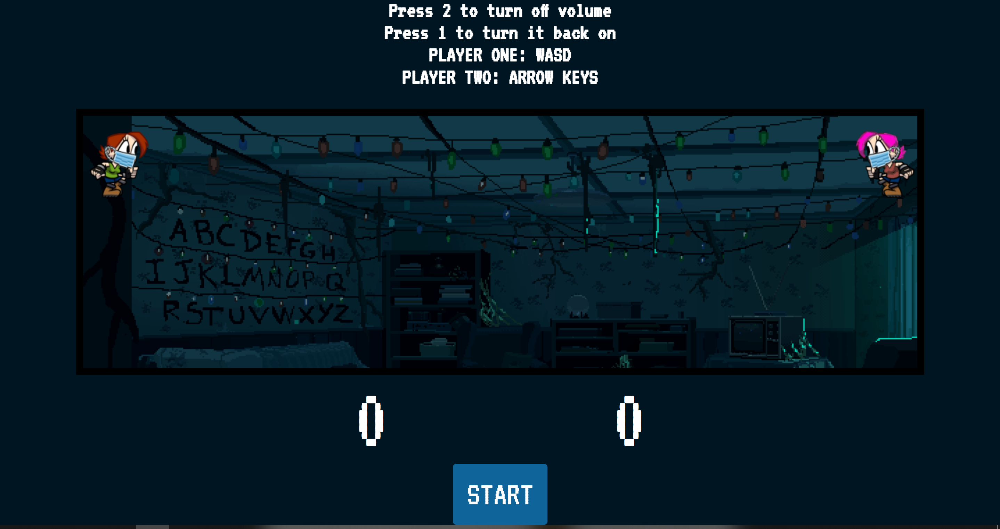

Ovan är ett projekt från skolan där grunden var att lära sig positionering i CSS. Samt jobba utifrån en
kravspecifikation från kund. Håll muspekaren över bilden för att se sida två av webbplatsen
Tryck här för
att komma till GitHub Repot
Ovan är ett egen-designat projekt som vi arbetade med i skolan. Jag var inte nöjd och skapade därför
sidan du är på just nu (haha).
Tryck här för att
komma till GitHub
Repot

Ovan är ett JavaScript projekt som jag tillsammans med en grupp i skolan skapat. Projektet är uppbyggt på
APIer där du får fram population, väder, vanliga fakta samt den senaste nyheten från ett land samt de
tillhörande städerna till landet.
Tryck här för
att komma till
GitHub Repot

Ovan är även det ett grupparbete där vi fick i uppgift att skapa ett spel för att lära oss om kollision
och tangenttryckningar. Vi har i spelet två karaktärer som ska jaga varandra och samla poäng.
Tryck här för att
komma till GitHub Repot